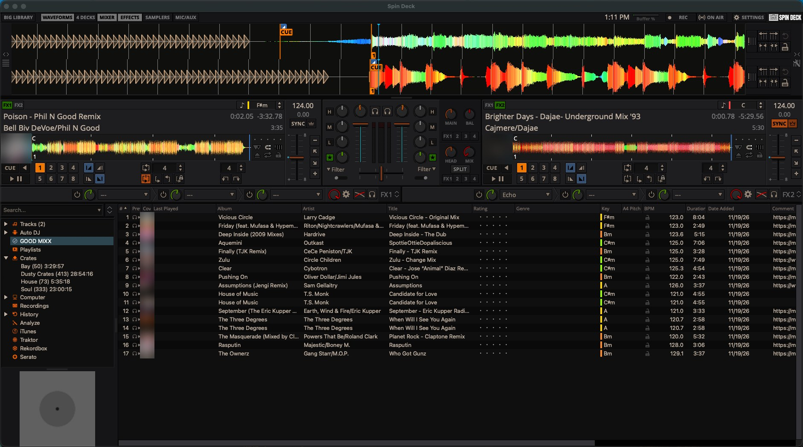
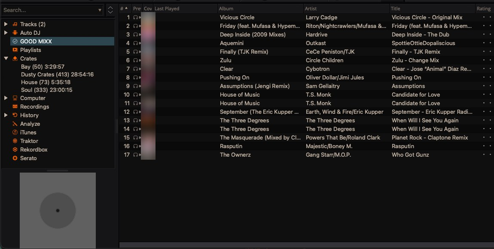
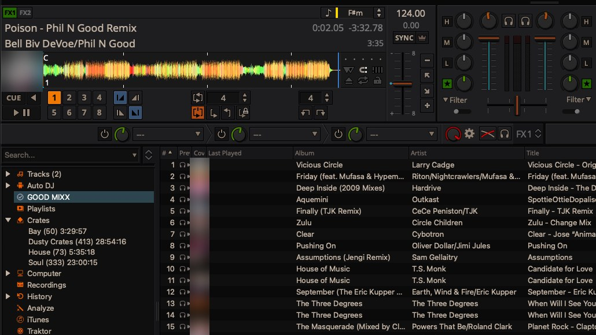

Spin Deck is a full DJ app for your Mac: real decks, a real mixer, a memory for the mixes that worked, and stems made right on your computer. No account. No subscription.
Beta: it changes often. Please tell us what breaks.

Album covers in the screenshots are blurred.
Hit one button on your controller after a blend that works. A big “GOOD MIX SAVED” sign pops up, and next time GOOD MIXX lists your proven mixes first, then songs that match in key and tempo.
Right-click any song and choose Make Stems. Spin Deck splits it into drums, bass, vocals and the rest, right on your Mac. Mute the vocals, drop the drums, build your own edits live.
Plug in a Hercules DJControl Inpulse T7 and go: motor platters, colored pads, effects, plus VOCAL and INSTRUMENTAL buttons for stems. Other MIDI controllers work too.


Suggestions use the key wheel and tempo, including half and double time.
Record straight from the mixer and share the mix later.
Already use the GOOD MIXX app? Spin Deck brings your saved mixes in the first time it opens.
Ready-made setups for about 165 controllers. Plug in, pick it in Preferences → Controllers, play. Popular ones:
DDJ-FLX4, DDJ-400, DDJ-200, DDJ-SB / SB2 / SB3, DDJ-SX, CDJ-2000, CDJ-850
DJControl Inpulse T7 (with Spin Deck extras), Inpulse 200 / 300 / 500, DJControl MIX, Starlight, Compact
Mixtrack Pro FX, Mixtrack Platinum FX, Party Mix, DJ2GO2 Touch, Mixstream Pro, NS4FX, NS6II
S2 MK3, S3, S4 MK3, S4 MK2, F1, X1, Z1
Denon MC7000, MC6000MK2, MC4000 · Roland DJ-505 · Reloop Mixage, Beatmix · Xone K2 · Korg KAOSS DJ · Novation Launchpad
Not listed? Use the built-in learn wizard: press a button, click what it should do.
Controller setups come from the Mixxx community; some are more polished than others. Brand names belong to their owners.
Spin Deck is a free beta. Found a bug or have an idea? We want to hear it.